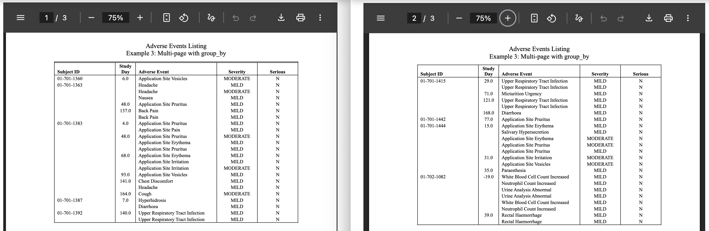
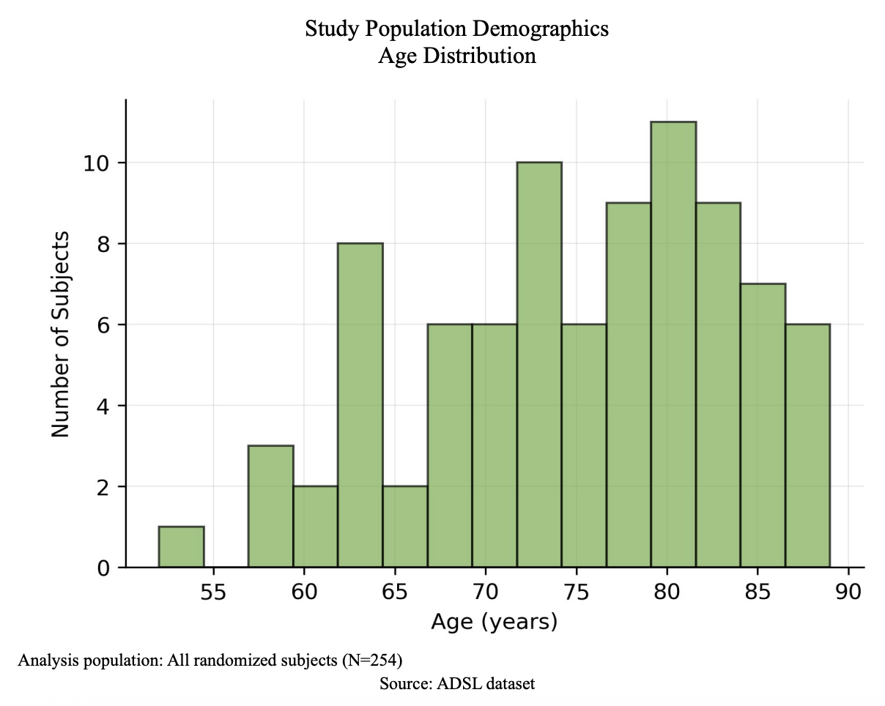
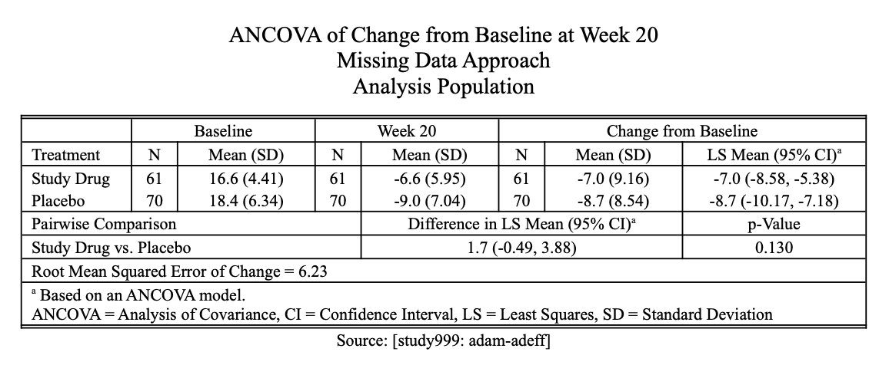

We are thrilled to announce the release of {rtflite} 1.0.0, marking a significant milestone in bringing production-ready TLF generation capabilities in RTF format to Python for clinical trial reporting. This major release represents our commitment to providing the pharmaceutical industry with robust, reliable tools for creating tables, listings, and figures (TLFs) in RTF format.
What is rtflite?
{rtflite} is a Python package designed specifically for generating TLFs in RTF format for clinical trial reporting. Inspired by the {r2rtf} it provides a programmatic interface to create highly customized TLFs that meet regulatory submission requirements. When used together with pkglite for Python, rtflite bridges the gap between Python’s data science ecosystem and the specialized requirements of clinical trial reporting and submission.
Major enhancements in rtflite 1.0.0
Pagination capabilities
With the page_by, group_by, and subline_by features in RTFBody introduced in rtflite 1.0.0, we can efficiently create paginated TLFs (examples).

Embedding figures
With the RTFFigure feature introduced in rtflite 1.0.0, we can embed multiple figures with titles, footnotes, and data sources (examples).

Table combination
RTFDocument now supports a list of tables. This allows users to combine multiple tables to create advanced layouts (examples).

Getting started
Please check out the rtflite quick start guide.
Acknowledgments
We acknowledge the pharmaverse community for feedback and contributions, the r2rtf team for architectural inspiration, and the uv project for simplifying Python environment management. uv is a fast, Rust-based tool that unifies dependency resolution, packaging, and isolated environments which helped saving our time in building, testing, and publishing Python packages. We also appreciate Claude Code for accelerating our AI-assisted development workflow. For project architecture, coding standards, and shared workflows, see our CLAUDE.md and contributing guidelines.
Disclaimer
This blog contains opinions that are of the authors alone and do not necessarily reflect the strategy of their respective organizations.
Last updated
2025-12-17 19:32:17.725964
Details
Reuse
Citation
BibTeX citation:
@online{zhang2025,
author = {Zhang, Yilong and Xiao, Nan},
title = {Rtflite 1.0.0: {Production-Ready} {Clinical} {TLFs} in
{Python}},
date = {2025-08-13},
url = {https://pharmaverse.github.io/blog/posts/2025-08-13_rtflite_1.0.0/rtflite.html},
langid = {en}
}
For attribution, please cite this work as:
Zhang, Yilong, and Nan Xiao. 2025. “Rtflite 1.0.0:
Production-Ready Clinical TLFs in Python.” August 13, 2025. https://pharmaverse.github.io/blog/posts/2025-08-13_rtflite_1.0.0/rtflite.html.